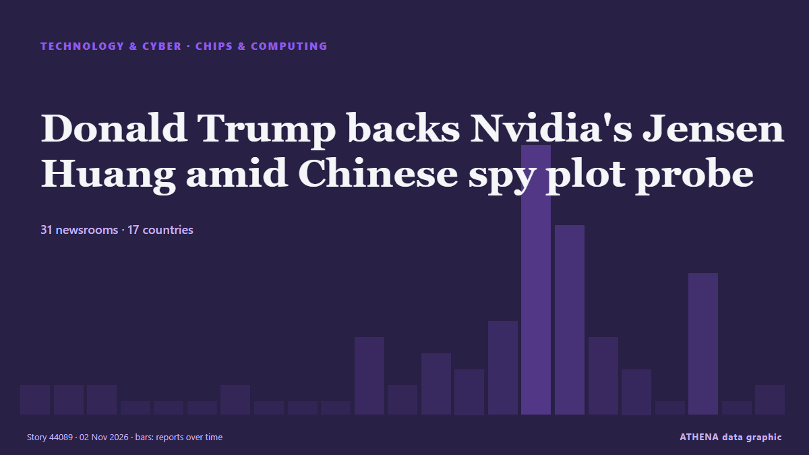

Donald Trump backs Nvidia's Jensen Huang amid Chinese spy plot probe

Nvidia CEO Jensen Huang warned that Europe risks falling further behind the US and China in artificial intelligence, despite its industrial base and technical talent. de DigiTimes Asia
Relayé de façon indépendante par 33 médias dans 17 pays depuis le 22 oct. ; premier à l'annoncer : DigiTimes Asia ; la couverture faiblit. ATHENA juge le risque modéré (2.1/10), surtout en raison de la gravité des dommages décrits et de sa portée géographique et sectorielle. La confiance est de 86 % (élevée) : 33 médias indépendants le confirment, avec une fiabilité moyenne des sources de 74 %. Médias par pays : Taïwan (13), États-Unis (8), Inde (6). Couverture : du 22 oct. au 30 oct., 194 heures.
Pourquoi c'est important: Les évolutions technologiques et cyber façonnent la sécurité, la concurrence et les règles de la vie numérique.
Ce qui a changé : 1 nouvel article dans les 24 heures jusqu'au 5 nov..
Premier titre : On the ground at Nvidia's AI showpiece: Jensen-mania, robot ducks and neocloud distress
Les titres sont affichés en anglais, tels que publiés.
En un coup d'œil
Sélectionné, noté et rédigé par la méthodologie publiée d'ATHENA. Aucun rédacteur n'intervient sur un événement en particulier. Comment il est produit ›
| 22 Oct 02:15 UTC | 2 |
|---|---|
| 23 Oct 02:15 UTC | 1 |
| 24 Oct 02:15 UTC | 0 |
| 25 Oct 02:15 UTC | 1 |
| 26 Oct 02:15 UTC | 0 |
| 27 Oct 02:15 UTC | 5 |
| 28 Oct 02:15 UTC | 5 |
| 29 Oct 02:15 UTC | 21 |
| 30 Oct 02:15 UTC | 15 |
| 31 Oct 02:15 UTC | 2 |
| 01 Nov 02:15 UTC | 8 |
| 02 Nov 02:15 UTC | 2 |
| 03 Nov 02:15 UTC | 1 |
| 04 Nov 02:15 UTC | 0 |
| 05 Nov 02:15 UTC | 1 |
Pourquoi ces chiffres
Importance
Risque
Confiance
La couverture : qui l'a annoncé, et quand
titre tel que publié · ouvre l'original- DigiTimes Asia · TaïwanCharts: Nvidia's China AI chip lead shrinks 80% as Huawei closes in
- DigiTimes Asia · TaïwanJensen Huang warns Europe risks falling further behind US, China in AI
- CNBC World · États-UnisOn the ground at Nvidia's AI showpiece: Jensen-mania, robot ducks and neocloud distress
- Times of India · IndeNvidia’s Jensen Huang says US rules pushed China toward self-reliance
- DigiTimes Asia · TaïwanSamsung, SK Hynix eye 2Q27 shipments of 8-layer HBM4 to Nvidia
- DigiTimes Asia · TaïwanAMD, Nvidia target substrate capacity amid 4x expansion constraints
- DigiTimes Asia · TaïwanJensen and Musk both think aging GPUs are worth more than the books show
- TechCrunch · États-UnisGeneral Compute raises $100 million Series A, countering the neocloud disaster narrative
- DigiTimes Asia · TaïwanNvidia DSX POD targets AI factories as Microsoft and AWS push modular data centers to the edge
- Times of India · IndeBlackBerry was once the phone everyone wanted, now it is betting on AI robots
- Xinhua (English) — page reader · ChineColumn: Understanding the strengths of China's governance model
- Xinhua (English) — page reader · ChineColumn: Understanding the strengths of China's governance model
- The Next Web · Pays-BasChina’s CXMT will make AI memory despite yields as low as 20%, Reuters says
- DigiTimes Asia · TaïwanAnthropic's IPO filing highlights China AI rivalry as model distillation, chip export controls emerge as key risks
- Times of India · IndeNvidia CEO names 3 countries that are leading the world in tech & manufacturing
- DigiTimes Asia · TaïwanNvidia's Rubin Ultra cooling: 0.1mm microchannels vs vapor chambers
- DigiTimes Asia · TaïwanSenseCore captures nearly half of China's neocloud market as heterogeneous chips boost compute efficiency
- Korea Herald · Corée du SudSamsung SDS targets Asia-first Nvidia Vera Rubin cloud launch
- Tom's Hardware · États-UnisNvidia CEO Jensen Huang may have been the target of a spy plot through 'Chinese intelligence asset,' report claims
- The Guardian · Royaume-UniNvidia CEO reportedly targeted by an alleged Chinese spy
- NDTV · IndeNvidia CEO Calls Dealings With Company Under China Spying Probe "Normal"
- Indian Express · IndeNvidia CEO Jensen Huang was spied on by Chinese intelligence agencies: Report
- CNBC World · États-UnisNvidia responds to report Jensen Huang was target of Chinese asset, says diversion allegations were 'investigated and debunked'
- Colombia One · ColombieNVIDIA’s Jensen Huang Reportedly Targeted in Chinese Spy Plot
- TechCrunch · États-UnisUS investigated Chinese spy plot aimed at Nvidia CEO
- The Diplomat · JaponThe Promise and Pitfalls of Nvidia’s Venture in Kazakhstan
- Ars Technica · États-UnisTrump ignored intel on China’s Nvidia spy to protect company’s stock, report says
- The Hill · États-UnisNvidia dismisses report alleging Chinese executive tied to CEO passed intel to Beijing
- Sydney Morning Herald · AustralieThe ‘Chinese spy’ who sparked panic at the White House
- NBC News (World) · États-UnisNew report says Nvidia CEO was possible target of Chinese spy plot
- The Straits Times · SingapourNvidia chief Jensen Huang seen as target of Chinese spy plot
- The Straits Times · SingapourNvidia CEO Jensen Huang says ties to company under spying probe were ‘normal’
- DigiTimes Asia · TaïwanAnalysis: Can Kazakhstan really be Europe's AI factory?
- Times of India · IndeUS officials suspect Nvidia CEO may have known about China spy's activities: Report
- DigiTimes Asia · TaïwanAnthropic's multi-platform AI strategy pressures Nvidia pricing power
- CNA (Channel NewsAsia) · SingapourNvidia's Huang says dealings with firm in US spy probe were 'normal': Report
- eNCA · Afrique du SudNvidia's web of AI bets: smart strategy or bubble risk?
- DigiTimes Asia · TaïwanJensen Huang calls Megaspeed ties normal amid Washington's spy probe
- The Business Times · SingapourNvidia CEO says ties to Singapore firm under spying probe were ‘normal’
- DigiTimes Asia · TaïwanNvidia dominates AI robot chips with 69% market share